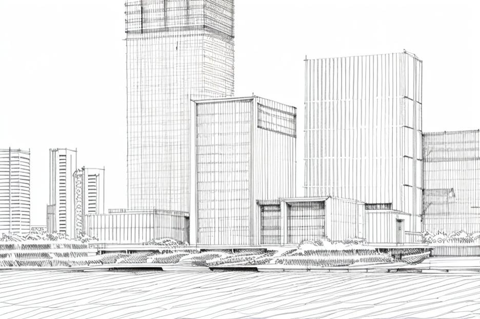
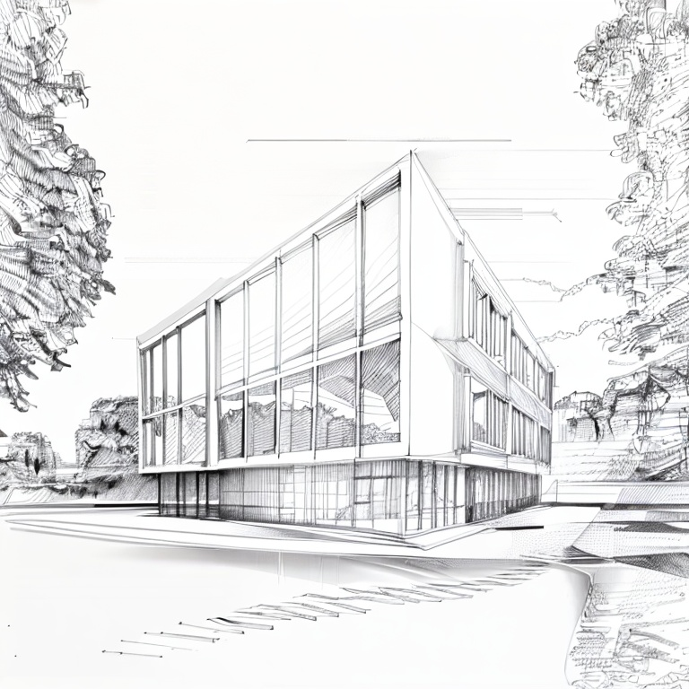
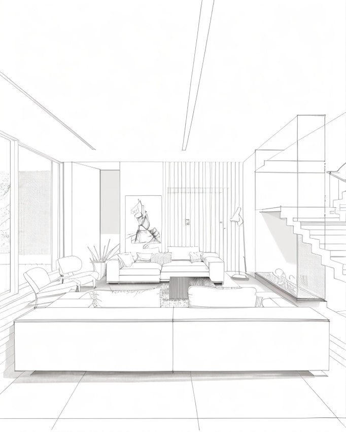
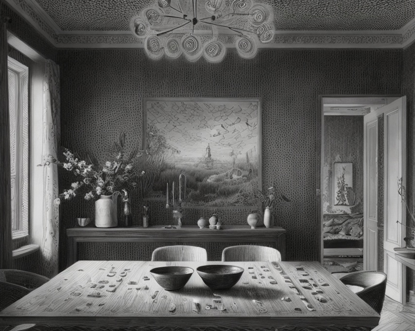
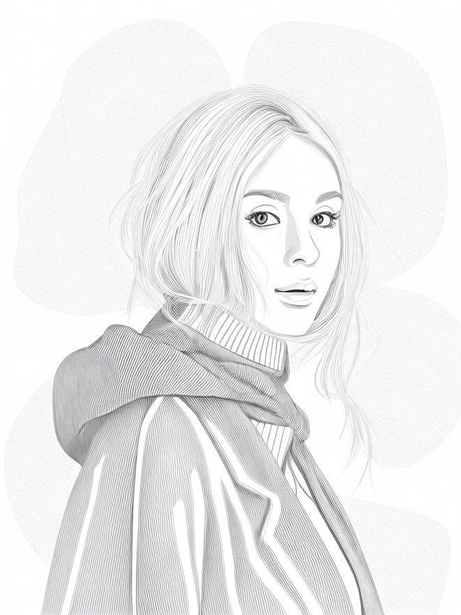

PromeAI's Photo to Sketch - Artistry at Your Fingertips

With the innovative PromeAI's Photo to Sketch feature, your photographs are not just moments captured in time but are gateways to sketched masterpieces. This feature is designed to emulate the intricate strokes of an artist, turning your images into beautiful, hand-drawn line drawings.

Convert Any Photo to a Sketch with AI Precision
Whether it’s a sentimental portrait, a professional product image, or a breathtaking landscape, the Photo to Sketch AI uses advanced algorithms to render a faithful and artistic sketch representation of your original photo.

Diverse Sketch Styles for Every Scenario
The Photo to Sketch feature is pre-equipped with multiple styles, such as design sketches and art sketches, allowing you to select the perfect match for your use case. The versatility of this tool makes it ideal for various professional and personal applications.

Customize Your Sketch to Match Your Vision
Personalize the sketch to perfectly align with your creative intent with the Photo to Sketch AI. PromeAI doesn't just replicate; it innovates, allowing your unique vision to guide the final artwork.
Experience the Quick and Easy Transformation
The promise of PromeAI’s Photo to Sketch is not just quality but also convenience. With just a click, witness the rapid transformation of your photos to sketches, saving you time while delivering high-quality artistic results.
FAQ
What types of photos can I use with the Photo to Sketch feature?
You can use any kind of photograph, from portraits and product images to landscapes — PromeAI's AI is versatile enough to handle them all.
Can I customize the style of my sketch?
Absolutely! Photo to Sketch offers a variety of preset styles, and you can also describe your personal requirements to get a custom-styled sketch.
How fast is the photo-to-sketch conversion process?
The transformation is both quick and seamless, ensuring that you get your desired sketch without having to wait long.
Is there any technical expertise required to use the Photo to Sketch AI?
No technical expertise is needed. PromeAI's user-friendly interface guarantees a smooth experience even for those with no technical background.
Ready to turn your photos into exquisite sketches?
Try PromeAI's Photo to Sketch today and unleash the true potential of your images!